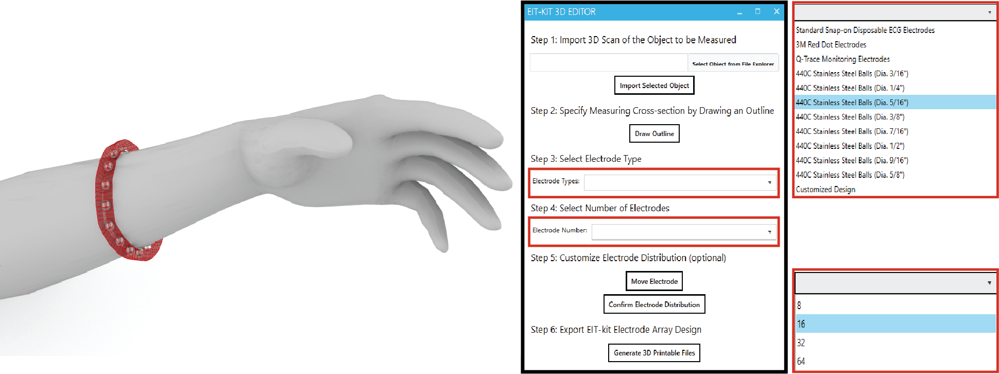
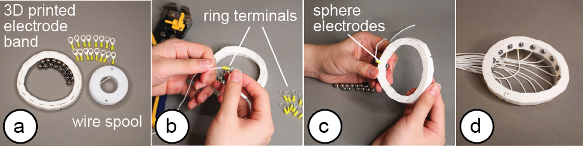
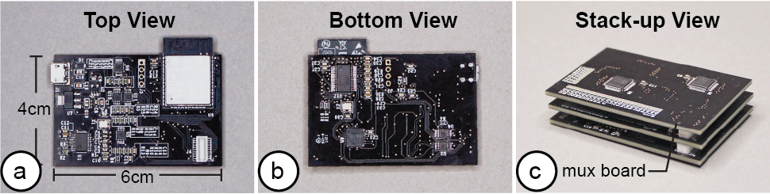
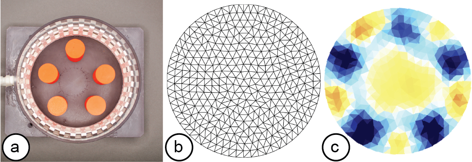
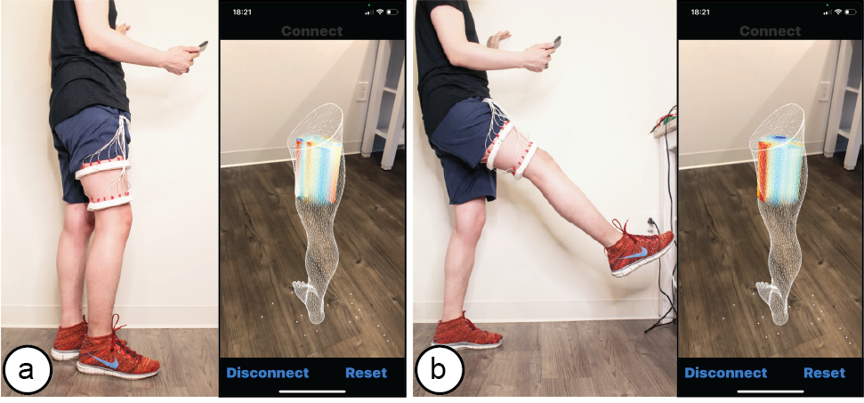
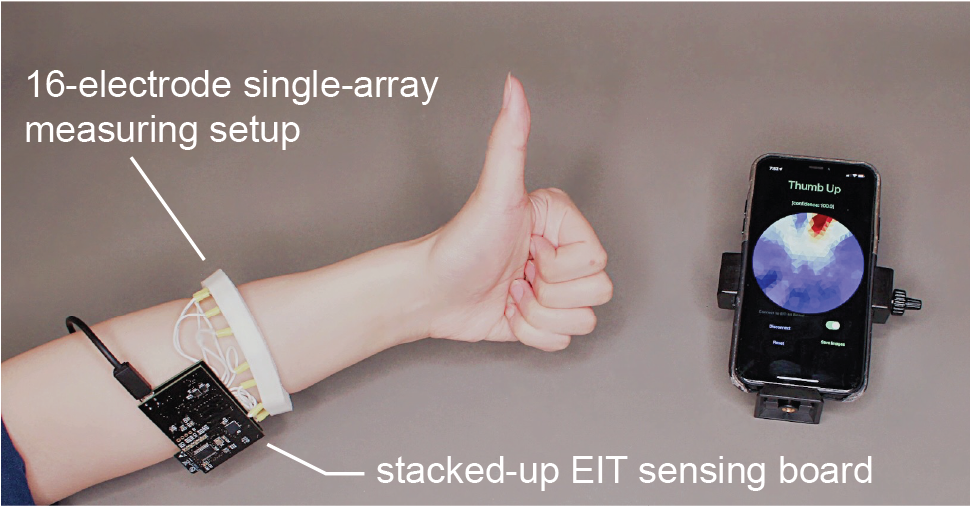
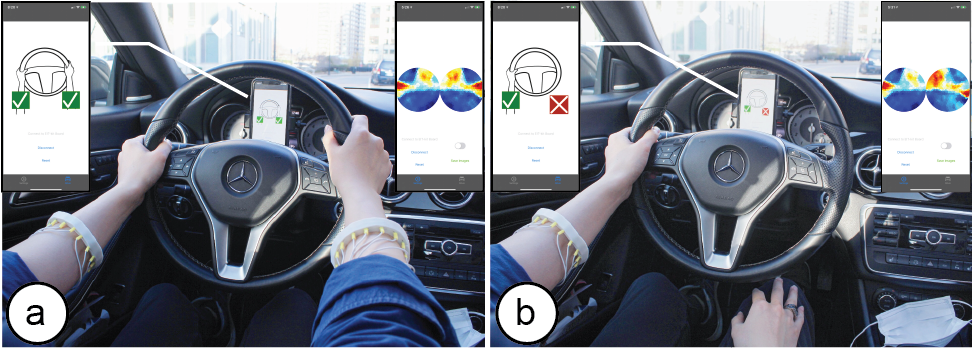
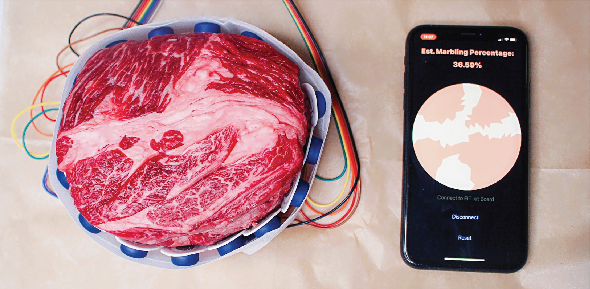
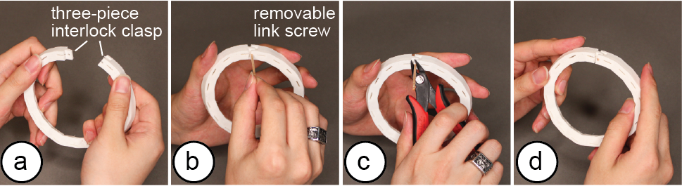
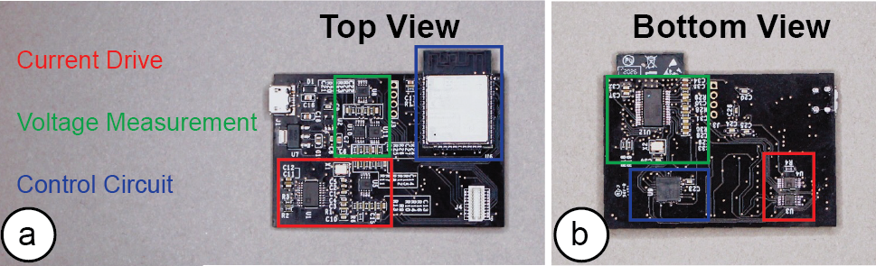

Publication
Junyi Zhu, Jackson C. Snowden, Joshua Verdejo, Emily Chen, Paul Zhang, Hamid Ghaednia, Joseph H. Schwab, Stefanie Mueller.
EIT-kit: An Electrical Impedance Tomography Toolkit for Health and Motion Sensing
In Proceedings of
UIST ’21.
DOI PDF Video Talk Slides Video Press UIST Talk Video Slides


DOI PDF Video Talk Slides Video Press UIST Talk Video Slides
1 / 54

2 / 54

3 / 54

4 / 54

5 / 54

6 / 54

7 / 54

8 / 54

9 / 54

10 / 54

11 / 54

12 / 54

13 / 54

14 / 54

15 / 54

16 / 54

17 / 54

18 / 54

19 / 54

20 / 54

21 / 54

22 / 54

23 / 54

24 / 54

25 / 54

26 / 54

27 / 54

28 / 54

29 / 54

30 / 54

31 / 54

32 / 54

33 / 54

34 / 54

35 / 54

36 / 54

37 / 54

38 / 54

39 / 54

40 / 54

41 / 54

42 / 54

43 / 54

44 / 54

45 / 54

46 / 54

47 / 54

48 / 54

49 / 54

50 / 54

51 / 54

52 / 54

53 / 54

54 / 54

EIT-kit: An Electrical Impedance Tomography Toolkit for Health and Motion Sensing

Figure 1. (a) EIT-kit supports users in creating a variety of EIT sensing devices and (b) visualizing the resulting data. EIT-kit provides (c) a 3D editor plugin, (d) a sensing motherboard and microcontroller library, as well as an image reconstruction API.
In this paper, we propose EIT-kit, an electrical impedance tomography toolkit for designing and fabricating health and motion sensing devices. EIT-kit contains (1) an extension to a 3D editor for personalizing the form factor of electrode arrays and electrode distribution, (2) a customized EIT sensing motherboard for performing the measurements, (3) a microcontroller library that automates signal calibration and facilitates data collection, and (4) an image reconstruction library for mobile devices for interpolating and visualizing the measured data. Together, these EIT-kit components allow for applications that require 2- or 4-terminal setups, up to 64 electrodes, and single or multiple (up to four) electrode arrays simultaneously.
We motivate the design of each component of EIT-kit with a formative study, and conduct a technical evaluation of the data fidelity of our EIT measurements. We demonstrate the design space that EIT-kit enables by showing various applications in health as well as motion sensing and control.
INTRODUCTION
Electrical Impedance Tomography (EIT) is an imaging technique that measures conductivity, permittivity, and impedance of a subject [18]. It works by attaching electrodes to the surface of the subject, and then using the electrodes to either inject current or measure the resulting voltages. Interpolating the raw signals then results in an image of the subject’s internal conductivity.
In the past, EIT sensing required large, expensive hardware setups, as well as complicated image reconstruction algorithms. As a result, it was mainly used for professional medical applications in hospitals for monitoring the inner structure of a part of the human body [18], such as for observing lung function [16] and detecting cancer [50]. In the last decades, with the development of low-cost electronics and the availability of open-source EIT image reconstruction libraries, such as EIDORS [3], EIT sensing also became accessible to HCI researchers who have used it for touch sensing (Electrick [46]), tactile sensing [22], and hand gesture recognition (Tomo [45]). Such advances that made EIT sensing more portable have also fed back to the health sensing domain [4] where it has been used in sports medicine on the field [13] and home care [30], which demonstrates the great potential of low-cost EIT technology.
However, the expertise required for designing custom EIT devices is still high. To create an EIT device, users first have to design the form factor of the device to ensure constant contact between the electrodes and the subject, which depending on the measurement location and electrode distribution are different each time. Next users have to connect the EIT device to a sensing board, which for custom applications often needs to be designed from scratch [37, 47] since commercial boards do not provide enough options to support different EIT configurations. On top of that users have to find the optimal AC injecting current and voltage measurement gain to optimize the signal acquisition, which can be time consuming because they are different for each sensing task. Finally, while there are visualization libraries for desktop applications (e.g. EIDORS [3] based on MATLAB [27]), they do not work on mobile devices and thus users have to create their own visualizations when designing mobile applications.
In this paper, we present EIT-kit, an electrical impedance tomography toolkit that supports users across the different stages of EIT device development. EIT-kit provides (1) a 3D editor for customizing the form factor of the measurement setup and the electrode distribution, (2) a customized EIT sensing motherboard that supports different measurement setups (2- and 4-terminal, up to 64 electrodes, and single or multiple (up to four) electrode arrays), and that provides adjustable AC injecting current to improve the quality of the signals, (3) a microcontroller library that automates the calibration of the signals and facilitates data collection, and (4) an image reconstruction API for mobile devices that can be used to interpolate and then visualize the data. We motivate the development of EIT-kit with a formative user study, demonstrate the capability of EIT-kit to support various interactive devices that focus on health and motion sensing (i.e., a muscle monitor for physical rehabilitation, a wearable hand gesture recognizer, armbands for non-intrusive distracted driving detection), and also conduct a technical evaluation of the data fidelity of our EIT measurements.
In summary, we contribute:
- a formative study with 6 participants to understand the challenges of EIT sensing and how to address them in a toolkit;
- a 3D editor for personalizing measurement setups and a custom sensing motherboard;
- a library for microcontrollers to automate EIT data collection and a library for mobile devices for image reconstruction;
- a demonstration of EIT-kit’s applicability across different sensing use cases at the example of four interactive devices;
- a technical evaluation of the data fidelity, image reconstruction algorithm and system performance of EIT-kit.
FORMATIVE STUDY
To further increase our understanding of the challenges involved in EIT sensing, we conducted a formative study with six participants. The participants included 2 males and 4 females, aged 21-35 (M=27.2, SD = 4.60). Three participants were medical professionals with an MD degree from a hospital who use EIT or similar sensing technologies (EMG, EEG) in their daily diagnosis. The other three participants were designers who had previously designed interactive devices using EIT or similar sensing technologies.
We conducted semi-structured interviews (40 minutes per participant) and focused our questions on participants’ experiences when building EIT sensing devices and acquiring data via EIT sensing. We asked about any challenges participants encountered and invited them to talk about what would have made their task easier. We describe our findings below and discuss how they informed our toolkit design.
Electrodes Placement: Multiple participants stated that it can be challenging to ensure that electrodes are placed correctly over the sensing area and that they are positioned to create sufficient electrical contact. P2 explained: “it’s difficult to have consistent electrode placement and to keep it in [good] contact with the skin.” P3 also stated: “... the electrode placement is really important to make sure that you’re getting a good measurement.” P1 added that “sometimes even residencies can struggle with electrode placement across different patients, which results in bad data quality.”
Measurement Automation: All six participants mentioned that they struggled with calibrating the signals to obtain the best data quality and wished this step could be automated. This was especially prominent among the medical professionals who have to re-calibrate the setup for each new patient. P1 mentioned that the more automated the process, the more beneficial it is, saying “we physicians want it as simple as possible to measure [across] different patients and body parts so that we can diagnose more patients.”
Cross-section vs. Volumetric Visualization: Several participants mentioned that they prefer a 3D volumetric visualization over the 2D cross-section visualization offered by existing software. P3 explained that such a visualization would be a reason for doing more EIT measurements, saying “we [physicians] only use equipment if it provides a diagnosis that changes or adds to our current diagnosis [...] we don’t want to scan the patient more than necessary.” P6, one of the interactive device designers, also expressed that “[volumetric visualization] would have higher data density to interpolate and can enable new applications in the VR/AR domain.”
Data Sense Making: Five out of six participants expressed that they would like to have data sense making capabilities on top of the raw measurements and reconstructed images. P1 said that “I spend the most time convincing patients that what I’m saying is valid [...] it would be nice if this kit also visually validated my interpretation.”. P5 also stated that “[it] may be helpful to give more detail on what the data means so that the user can know what they’re looking at” and P6 added “(data sense making) can be super helpful to understand what data are represented in the physical world.”
Based on these insights from our formative study, we designed our toolkit to include a 3D editor that generates the electrodes placement based on a 3D scan of the human body, a sensing board and sensing library that automates the EIT signal measurements, the option to use multiple electrode arrays with the board for 3D volumetric visualization, and a visualization library that facilitates data sense making by allowing users to visualize the data in AR overlaid onto the subject they are measuring.
THE EIT-KIT
EIT-kit supports users across the different stages of EIT device development. EIT-kit offers a 3D editor for creating custom measurement setup for different measuring locations (e.g, wrist, thigh) and sensing resolutions (number of electrodes, electrode distribution). In the EIT data measuring stage, EIT-kit provides an EIT sensing motherboard as well as a sensing library (Arduino-based) for acquiring data from the board. In the final stage, where users have to interpolate the data and visualize it, EIT-kit assists users with an image reconstruction API for mobile devices (i.e. iOS devices) that is capable of 2D and 3D visualizations, on screen and in AR. By providing these building blocks that are essential for EIT device development, EIT-kit facilitates the creation of custom EIT sensing applications.
3D Editor for EIT Device Geometry and Electrode Distribution
When users create a new EIT device, EIT-kit’s 3D editor supports users in creating a device form factor that ensures sufficient contact with the subject and allows them to specify the sensing resolution via custom electrode distributions. Once users are satisfied with the design, the 3D editor generates the fabrication files for building the physical EIT device.
Ensuring Sufficient Contact with Subject: To ensure that the electrode arrays make sufficient contact with the subject, EIT-kit’s 3D editor automatically generates a device form factor that fits tightly around the designated sensing area. Users start by importing a 3D model of the subject they want to measure. The 3D model can be acquired either through 3D scanning or by downloading a pre-built 3D model from an open-source platform (e.g., Thingiverse [21]). Next, users specify the sensing area on the 3D model by marking the corresponding faces, EIT-kit then automatically generates a form factor that tightly fits around the marked area, as shown in Figure 2.

Figure 2. Device Form Factor: EIT-kit’s 3D editor generates the device geometry and electrode distribution automatically, here shown at the example of a wrist worn device on an imported arm 3D model.
Specifying the Sensing Resolution: To specify the sensing resolution, i.e. the number of electrodes, users can either select the desired number from the user interface and EIT-kit will distribute them evenly, or directly select locations on the device geometry. This also allows users to specify a custom measurement focus rather than using even measurements. EIT-kit supports users in finding the best electrode distribution for their use case by showing the resulting sensing paths between the electrodes in a 2D visualization (Figure 3). In addition, EIT-kit helps users in finding the best trade-off between measurement resolution and measurement speed by displaying the estimated frame rate of the chosen electrode setup. Finally, to support users in creating multi-band designs, EIT-kit provides functionality that replicates an existing band in a different location while adjusting the device form factor to fit that geometry.

Figure 3. Sensing Quality: (a) Areal weighting of the EIT measurements of even and (b) uneven electrode distributions.
Exporting the Fabrication Files: Once satisfied with the device form factor and electrode distribution, users export the design as a 3D printable .stl file. The 3D printable file already includes spaces for the electrodes in the corresponding locations. By default, the editor uses standardized commercially available electrode pads (e.g., 3M 2248 monitoring electrodes [1] or 440C stainless steel balls [28]). However, users can also define custom electrode shapes, which the 3D editor then exports as 3D printable files. Such electrodes can be printed with plastic filament and then coated with silver particles to make them conductive. After 3D printing, users attach the electrodes to the EIT device geometry as shown in Figure 4 and then solder or plug the electrode arrays into the sensing board.

Figure 4. Fabrication: (a) 3D printed prototype and electrodes ready for assembly, (b) adding the wires to the electrodes, (c) attaching the electrodes to the prototype, (d) assembled EIT device.
EIT Sensing Motherboard
After fabricating the EIT device, users next connect the EIT device to the EIT-kit sensing motherboard (Figure 5). The motherboard automates the EIT signal calibration and measurement for different electrode configurations.

Figure 5: EIT sensing motherboard: (a) top view, (b) bottom view, (c) with two stacked up mux boards.
Different Electrode Configurations: Our motherboard can support different electrode configurations since its architecture consists of a main sensing board that can be flexibly extended with a stack of modular multiplexer boards. The mux boards can support up to 64 channels when connected to the main sensing board and thus allow users to customize the number of electrodes (up to 64) depending on the use case. The channels can also later be configured via the EIT-kit sensing library to take measurements for either single or multiple electrode array (up to 4) configurations.
AC Signal Injection and Voltage Measurement Mode: EIT-kit’s board supports both 2- and 4-terminal measurements. 2-terminal measurements use opposing pairs of electrodes, i.e. inject AC current into one pair of opposing electrodes and then measure voltage of all other pairs of opposing electrodes. 4-terminal measurements, in contrast, use adjacent pairs of electrodes, i.e. inject AC current into one pair of adjacent electrodes and then measure voltage of all other pairs of adjacent electrodes. 2-terminal measurements use a simpler hardware setup and support higher frame-rates since fewer measurements have to be taken whereas 4-terminal measurements have a higher spatial resolution due to the additional measurements but at the expense of lower frame-rates. To support both types of measurements, EIT-kit’s board can address each channel individually and set it to either inject current or measure the resulting voltage. In addition, EIT-kit’s board provides adjustable AC injecting current and measurement voltages since impedance can vary across different subjects, different sizes of electrodes, different distances between adjacent electrodes, and different frame rates [16]. EIT-kit’s board can adjust the injected current by providing differential AC current up to 500kHz (which covers the main frequencies used for bio-signal measurements [41]) and output voltages ranging from -5V to 5V. To accommodate the range of different injected currents, the boards’ ADC converter is sampling at 20MHz for the voltage measurements to ensure the signal is accurately captured.
Autocalibration: To help users find the AC current and measurement voltage that delivers the highest data quality for their sensing application, the board provides an auto-calibration mode that uses a digital rheostat instead of a fixed resistor for both AC current and voltage measurement gains.
EIT Sensing Library
After connecting the EIT device to the sensing board, users next need to write a program to measure the signals. EIT-kit assists users by providing an EIT sensing library for the Arduino programming environment. Users first input the parameters of their measurement setup into the library’s constructor and then call the library’s take_measurement() function to start collecting data.
Initializing the Constructor: Users start by importing the library and then construct an object of the library that takes as input parameters the specifications from the measurement setup, i.e. the number of electrode arrays, the number of electrodes, the sensing method, which is either 2- or 4-terminals, and if they want to use auto-calibration (EIT_setup(int array_num, int electrode_num, int sensing_method, boolean auto_calibration = TRUE)).
Calibrate Signals: By default, auto-calibration is turned on. To autocalibrate the signals, the library evaluates different injecting currents and voltage measurement gains (i.e., 2048 simulations, 10 bit for each current and voltage) and chooses the combination that maximizes the voltage response within the ADC channel’s range. Users can also turn the auto-calibration off and manually try different injecting current and voltage measurement gains using the set_current() and set_voltage_gain() functions. In addition, the library’s constructor contains a boot-up function, which calibrates the subject-specific fps based on the subject’s conductivity.
Collecting Data: Once the calibration process is completed, users can start collecting data by calling the take_measurement() function. By default, measurement data is retrieved from the electrode pairs in sequence, i.e. starting with one electrode pair and then the remaining electrode pairs around the array. Depending on the measurement method (2- or 4-terminal), the data is either collected by measuring adjacent or opposing electrodes. Users can also directly access the measurement data for each electrode pair, i.e. retrieve the raw root mean square (RMS) voltage measurements and phase measurements via getter methods provided by the library.
Communication Protocol: By default, Bluetooth communication is turned on. When the microcontroller collects new data, it automatically sends it to the image reconstruction API via Bluetooth. The image reconstruction API then uses the received data, i.e. the voltage readings, to reconstruct the image as soon as it receives the measurements. Users have the option to turn off Bluetooth and instead write the values to the Serial Port. This also enables users to use the voltage readings for other applications by having their application read the values from the Serial Port.
Image Reconstruction API
Once users started to collect data, they can use the functions from EIT-kit’s image reconstruction library to interpolate and then visualize the data. The image reconstruction library is built for mobile devices (e.g., iPhone, iPad) and can be used with the Xcode integrated development environment.

Figure 6: A reconstructed EIT image: (a) measurement setup, i.e. a water tank with five 3D printed PLA cylinders, (b) triangulated mesh, (c) reconstructed conductivity map generated on a mobile phone (model: iPhone XR).
Interpolating the Data: Once the measurement data arrives at the communication port, the image reconstruction library stores the data for later data interpolation. Before the data can be interpolated, users first have to specify the boundary that best approximates the measuring setup (i.e., circular, rectangular, or elliptical). The image reconstruction library then processes the voltage measurements from the electrode pairs and calculates the conductivity distribution, i.e. the conductivity at each point within the boundary.
Visualizing the Data: Once the library determined the conductivity at each point, it still has to visualize it in an image. For this, the image reconstruction library constructs an empty mesh, which consists of uniform triangular faces. It then maps the previously calculated conductivity distribution onto the faces (Figure 6). Users can set the ’visualization mode’ to be either continuous, in which case a color gradient based on the value of the conductivity is assigned, or discrete, in which case either black or white is assigned. When multiple electrode arrays are used, the image reconstruction library creates a separate 2D visualization for each electrode array. Alternatively, users can also visualize the data from multiple electrode arrays as a 3D volumetric image, which the image reconstruction library creates by performing a linear interpolation of the previously generated 2D meshes of each of the electrode arrays. EIT-kit also provides an AR visualization mode in which the volumetric data is overlaid onto the user’s environment using the mobile device’s AR functions. Users can then build their own application-specific visualizations on top of the reconstructed image data.
APPLICATIONS
We demonstrate the applicability of EIT-kit with a range of EIT devices that support different sensing applications. The applications include a muscle monitor for physical rehabilitation, a wearable hand gesture recognizer, and a wrist-worn device that can detect when users are distracted while driving. To demonstrate that EIT-kit can accurately sense biological tissue, we also include an application in which we apply EIT sensing to a cross-cut piece of meat which is similar to human tissue. All devices are developed via EIT-kit.
Muscle Monitor for Physical Rehabilitation
We built a personal muscle monitor that can sense muscle strain and tension in the thigh to monitor muscle recovery after injury and to prevent re-injury of the muscles. The muscle monitor uses two electrode arrays to create a 3D volumetric image of the thigh. This does not only provide more comprehensive data on the muscle engagement but also reduces measurement errors due to the EIT device shifting slightly during movement. The muscle monitor uses a custom electrode distribution to focus the measurements on a particular muscle group, i.e. the quadriceps femoris.
To create the muscle monitor, we first used EIT-kit’s 3D editor to select two regions around the 3D scanned thigh model of the patient to generate the device geometry for the two electrode arrays. Next, we chose the 16 electrode option and set the electrode type to be 1/2" stainless steel spheres. EIT-kit then distributed the electrodes evenly along the device geometry. To emphasize the measurements over the quadriceps femoris, which are four muscles located at the front of the thigh used for walking, running, jumping and squatting, we adjusted the electrode positions to focus on this area by repositioning them on the electrode band. We then 3D printed the exported design with elastic filament (TPU), assembled the electrode stainless steel spheres onto the printed device, and then connected it to the EIT-kit motherboard. We then used the EIT microcontroller library to initialize our setup for 4-terminal measurements to obtain the higher spatial resolution required to identify each muscle. Next, we built a mobile application using the EIT image reconstruction library and defined the visualization to be 3D for an AR environment. To test our device, we placed it onto our thigh, started our mobile application, and then used our mobile phone’s augmented reality function to overlay the 3D visualization onto our leg by using the virtual model of the leg to align the visualization with our body (Figure 7).

Figure 7: A muscle monitor for physical rehabilitation that can display an AR view of the muscle activity in real-time. Here, the AR visualization shows the muscle activity when the user is (a) standing, and (b) lifting the leg.
Wearable Hand Gesture Recognizer
To demonstrate how EIT-kit can help with the development of devices for sensing user interaction, we built a wearable hand gesture recognizer (Figure 8). Since we are not sure what the best measurement location is (e.g., wrist or arm) and what electrode distribution would be appropriate for sensing gestures (e.g., 8, 16, or 32), we created a range of prototypes that represent different combinations of these parameters. We quickly created the different measurement setups in the EIT-kit 3D editor and then exported them all. To evaluate the signal quality of the different measurement setups, we quickly configured them in the EIT-kit microcontroller library by specifying different parameters in the constructor, and then used the EIT-kit image reconstruction library to create the conductivity maps. Based on the images, we found that measuring on the arm with a 16-electrode array and a 4-terminal configuration results in the best trade-off between data quality, recognition speed, and cost for our device. We then trained a machine learning model on the conductivity images (default model from CreateML [20]), and achieved a recognition rate of 97.5% over six different hand gestures (i.e. rock, paper, scissor, left, right, thumb-up). This application demonstrates that EIT-kit can help users quickly prototype EIT devices for traditional EIT applications, such as gesture recognition, which is one

Figure 8: A wearable hand gesture recognizer that can distinguish between 6 different hand gestures, here showing the reconstructed EIT image for a thumbs-up gesture.
Non-intrusive Distracted Driving Detection
To demonstrate that EIT-kit can be used to build mobile EIT sensing devices, we built an EIT device that can identify which hand the user has on the steering wheel while driving. Car manufactures usually require drivers to have both hands on the steering wheel since not having the hands on the wheel is an indication of being distracted while driving, which causes a large number of accidents every year (12% of deadly vehicle crashes [12]). While several car manufacturers integrate sensors directly into the car (e.g., by adding them to the steering wheel), they can easily be fooled by attaching an object to the wheel [32]. Sensors on the hands bypass this issue. Furthermore, sensors on the hands can be used to remind the user to switch hands to avoid pain on long drives if one hand is overused. This cannot be done with sensors integrated into the wheel since they cannot detect which hand is used when the hand is placed at 6 & 12 o’clock on the wheel.

Figure 9: A wrist-mounted EIT device to detect if both of the driver’s hands are on the wheel: (a) both hands are on the steering wheel, i.e. safe driving behavior, (b) the right hand is off the steering wheel, which displays a warning.
To develop our EIT device, we created two separate 16-electrode arrays, one for each arm, and connected them to a single EIT-kit motherboard. In the microcontroller library, we set up the measurement as a two electrode array design and used the 2D visualization for the image reconstruction. We then built a custom application on top of the visualization that trains a machine learning model for each of the user’s arms, and then applies that model during driving. The app visualizes one of four possible detected outcomes, i.e. both hands on the wheel, only the left or right hand on the wheel, or neither hand on the wheel (Figure 9).
Visualizing Biological Tissue
Finally, we built an EIT device to demonstrate that EIT-kit is capable of sensing biological tissue. Since we cannot cut open a human body, we used a cross-cut piece of meat which closely emulates human tissue similar to prior work [47]. Since fat and lean tissue have different electrical conductivity levels, EIT can be used to visualize the tissue composition of a sample.
We built our EIT device using a single electrode array with 16-electrodes that are distributed evenly, and then used the EIT-kit microcontroller library to specify the measurement parameters to use a 2-terminal configuration. In contrast to the prior applications that used a gradient conductivity image, we used a discrete visualization (fat vs. lean tissue) for this use case. In EIT-kits image reconstruction library, we set the visualization mode to be ’discrete’ and defined the threshold level to be the conductivity of lean biological tissue. If the conductivity falls below the threshold, it is characterized as fat biological tissue, otherwise, as lean. A percentage counter in the corner keeps track of the amount of fat vs lean biological tissue in the sample (Figure 10).

Figure 10: An EIT device for sensing biological tissue, i.e. the percentage of fat and lean tissue in the sample.
TECHNICAL EVALUATION
To evaluate EIT-kit, we conducted several experiments. First, we tested how well EIT-kit’s default electrodes make contact with the human skin by measuring the contact impedance. Second, we evaluated the quality of data collected with EIT-kit’s sensing board, i.e. how well EIT-kit can differentiate between different numbers of distinct objects and objects of different sizes and shapes. We then evaluated the quality of EIT-kit’s image reconstruction when compared to EIDORS. Finally, we collected data on the overall system performance and the latency of individual components.
Evaluation of Electrode Contact
EIT signals are sensitive to variations in electrode properties, such as changes in contact impedance, electrode area and the boundary shape under the electrode. To avoid such variations, electrodes should have consistent and steady contact with the measurement subject via a "point-like" contact area [8]. To fulfill this requirement while avoiding pointy shapes that could cause discomfort to the wearer of the EIT device, EIT-kit uses sphere-shaped electrodes as one of its default electrode types (apart from standard medical electrodes). To evaluate if sphere-shaped electrodes make sufficient contact with the human skin, we compared sphere-shaped electrodes (1/2" 440C stainless steel balls) to the gold standard ECG electrodes. For our experiment, we placed both the ECG electrodes and the sphere electrodes mounted on a single armband (with and without conductive gel) at the same locations on the human skin, and injected a pk-pk 5V differential sinusoidal signal into one pair of adjacent electrodes. We then measured the signal amplitude over a signal frequency from 1kHz to 100kHz from another pair of adjacent electrodes. The contact impedance is represented by the value of amplitude measured / amplitude injected, with a larger percentage value indicating better results.

Figure 11: Quality of contact impedance of medical ECG electrodes and sphere electrodes (with and without conductive gel) with injecting alternating current frequency ranging from 1kHz to 100kHz.
Figure 11 shows the measurement results. We found that when low injecting frequencies are used the sphere electrodes do not perform as well when compared to the ECG electrodes (i.e., at 5kHz sphere electrodes with conductive gel perform about 3% worse and without conductive gel about 7% worse). However, they start outperforming the ECG electrodes at higher frequencies (i.e., above 35kHz when conductive gel is used and 70kHz when no conductive gel is used. Since the optimized signal frequencies for human skin are around 50kHz [41], we conclude that for this range the stainless steel sphere electrodes have comparable contact impedance (within 2%) with medical ECG electrodes and are therefore also suitable for health-related EIT sensing applications.
Evaluation of Measuring Data Quality
To evaluate the data quality from the EIT-kit sensing hardware, we developed a 32-electrode EIT phantom and designed experiments similar to those carried out in previous research [11, 13, 47]. Our phantom was 15cm in diameter and filled with 500ml saline water, which we used to approximate the conductivity of human tissue. In our first experiment, we measured how well our hardware can sense different numbers of distinct objects (red box in Figure 12). For this, we placed 3D printed PLA cylinders (diameter: 2cm) in different numbers (1-6 cylinders) into the phantom. In addition, we also tested how well our hardware can distinguish between objects of different sizes (green box in Figure 12). For this, we placed pairs of 3D printed PLA cylinders of different diameters (2cm and 4cm, and 2cm and 6cm) into the phantom. Finally, we also evaluated how well our hardware can differentiate different shapes. For this, we placed a 3D printed PLA cylinder and 3D printed prism into the phantom as shown in the blue box in Figure 12. To ensure that this evaluation only measures the accuracy of our sensing hardware and is not influenced by our image reconstruction algorithms, we used EIDORS to reconstruct the images. The measurement setups and reconstructed EIDORS images are shown in the top two rows of Figure 12. The reconstructed images indicate that our sensing hardware is indeed capable of detecting how many objects are present, how large the objects are, and which shapes they have.

Figure 12: Reconstructed images of phantom setups with different numbers of objects (red box), different object sizes (green box) and different shapes (blue box) measured by EIT-kit’s sensing hardware and visualized by both EIDORS and EIT-kit.
Evaluation of Mobile Visualization API
We evaluated the quality of EIT-kit’s image reconstruction by comparing it to a standard EIT image reconstruction library (i.e., EIDORS). We compared the image reconstruction quality for both data captured from our measurement board and data created through simulation.
Measured Data: The data captured from our measurement board consisted of the phantom measurement data (9 phantom conditions) from the previous evaluation section, as well as in-use data from the gesture recognition application in Section 5.2 (the six hand gestures). We reconstructed the EIT images with both EIDORS and EIT-kit’s image reconstruction library. Since it is not possible to acquire ground truth data for measured data, we use EIDORS’s images as ground truth and define the loss metric to be the conductivity deviation between the results from EIDORS and EIT-kit’s image reconstruction. Before generating the images, we set the mesh resolution and boundary shape in both image reconstruction libraries to be the same, i.e. 1024 triangles with a circular boundary. After the images were reconstructed from both EIDORS and EIT-kit, we normalized the conductivity values to 0.0-1.0 greyscale, and then compared them pixel by pixel to calculate the conductivity deviation between the two. We did not compare the meshes triangle by triangle since both image reconstruction libraries triangulate the meshes differently. The reconstructed EIT images of phantom data from EIDORS and EIT-kit are shown side by side in the last two rows of Figure 12. To calculate the average difference between EIDORS and EIT-kit we averaged the conductivity deviation of the last 5 continuous frames to account for slight perturbation for each of the 9 phantom conditions and 6 hand gestures (in total 75 frames). We used the origin frame σ0 as control. The results show that for the 9 phantom conditions, the average difference in conductivity is 0.0407 (std. 0.0123), with the control’s average at 0.235 (std. 0.00891). For the 6 hand gestures, the average difference in conductivity is 0.114 (std. 0.0373), with the control’s average at 0.205 (std. 0.0170). The images in Figure 12 emphasize these results, i.e. show that EIT-kit’s image reconstruction can reconstruct how many objects are present and what size the objects have. However, EIT-kit is not as robust in detecting object contours. This is because EIT-kit’s image reconstruction is optimized for real-time performance on a mobile device, and due to the constraints in computational power, it has to limit the mesh image resolution, i.e. EIT-kit uses 1024 triangular faces while EIDORS uses 4096 faces per image. We set EIDORS to a higher resolution because we did not want to diminish its performance because of mobile device computational limits.
Simulated Data: While the previous evaluation compared EIT-kit’s image reconstruction with EIDORS, it does not provide insights into how accurately EIT-kit and EIDORS represent the ground truth. To create ground-truth data, we simulated six conditions by creating input data for frames that contained 1-6 circular objects (diameter = 0.2) inserted into a unit circular boundary. We assigned each object a high conductivity of 2.0 and assigned the medium surrounding the objects a low conductivity of 1.0. As the loss metric, we used the conductivity deviation between the ground truth data and the reconstructed conductivity image, and compared the results from EIDORS and EIT-kit. We used the same mesh resolution (1024 triangles with circular boundary), and normalized the conductivity values from EIDORS and EIT-kit to 0.0-1.0 greyscale, as shown in Figure 13. The results show that for EIDORS the average difference in conductivity is 1.108 (std. 0.0518), and for EIT-kit 1.165 (std. 0.0841) when compared to the ground truth. The detailed results are presented in Table 1.
Table 1: Difference in Conductivity of EIT results from EIDORS and EIT-kit when compared to ground truth data.
| simulated data | 1 object | 2 objects | 3 objects | 4 objects | 5 objects | 6 objects |
| EIDORS | 1.043 | 1.061 | 1.093 | 1.123 | 1.154 | 1.174 |
| EIT-kit | 1.052 | 1.095 | 1.144 | 1.188 | 1.237 | 1.271 |

Figure 13: Side-by-side comparison of reconstructed EIT images by EIDORS and EIT-kit’s image reconstruction library. For each library the top row shows the ground truth data and the bottom row the reconstructed image.
Evaluation of System Performance
Finally, we evaluated EIT-kit’s overall system performance, including the sensing motherboard’s frame rate, the system latency, and the performance of the auto-calibration.
Sensing Motherboard Frame Rate: The board’s sensing frame rate depends on numbers of electrodes, measuring configurations, injecting current frequency, and period averaging factors. The ADC chip onboard samples at 20MHz. Under 100kHz injecting AC current, 4-terminal 32-electrode configurations (928 measurements per frame) and default averaging factor (4), the board runs at 26.94 frame-per-second (single measurement in 0.04ms).
System Latency: Apart from the sensing latency reported above, the mobile visualization API also takes on average 0.0349 second (28.65 frame-per-second) to solve each frame for 4-terminal 32-electrode configurations, measured over 200 continuous frames on an iPhone XR. However, the overall system latency is dominated by the Bluetooth communication. Depending on the number of electrodes and the measurement configuration, different amounts of data have to be sent. For the above configuration, the system overall runs at 9.93 frame-per-second over 60 seconds of continuous data.
Auto-calibration Performance: The purpose of the auto-calibration is to remove the need for an oscilloscope, which is required for manual calibration. The auto-calibration yields within +/-1% (i.e. +/- 10 out of 1024) of manual calibration with an external oscilloscope. All phantom tests in the evaluation section as well as application examples used auto-calibrated signals.
IMPLEMENTATION
We next provide additional details on how each component of EIT-kit is implemented. EIT-kit’s components, including the 3D editor plugin, customized PCB sensing board design files, microcontroller library, and mobile visualization API, are open source (https://github.com/HCIELab/EIT-kit_open-source.git).
EIT-kit 3D Editor
EIT-kit’s 3D editor is implemented as a Grasshopper Plugin for the 3D editor Rhino3D.
Device Geometry: Based on the polyline users drew on the imported object, our editor plugin first calculates the geodesic curve around the object and then offsets it along the normal vector of the object surface to create the device thickness. To generate the mounts for the electrodes, it first computes the electrodes’ widths and heights via their bounding boxes, and then generates a rectangle at each electrode’s location that matches these dimensions. Our editor plugin then offsets all rectangles along the normal vector until a 75% overlap is created with each electrode’s bounding box. It then lofts all rectangles, caps the generated open geometry to be a closed BREP (boundary representation), and calculates the boolean difference between the electrode 3D models and the closed BREP. As a result, the electrodes can be snapped into the electrode array geometry while also maintaining a constant contact area with the subject’s surface.
Electrode Distribution: To distribute the electrodes evenly, our editor plugin first computes the overall length of the geodesic curve and then divides it by the number of electrodes. For custom electrode distributions, the user’s selected electrode is always moving along the geodesic curve. For custom electrode shapes, our system requires that the electrode 3D model has its contact area on the 3D model’s base plane and centered at its local (0, 0, 0) coordinate to ensure the electrode distribution function works properly.
Connection Mechanism: The connection mechanism for closing the electrode arrays is implemented as a classic three-piece interlock clasp design (Figure 14). To ensure the connector does not interfere with the electrodes, the interlock geometry is generated at the center between two electrodes, and its length is constrained to be less than half the distance between the electrodes. A removable link screw can be exported and 3D printed separately. Alternatively, an office clip or toothpick can be used to lock the mechanism. The connector type for the electrodes and wires depends on the electrode type. For standard medical snap electrodes, our system generates space for snap electrode cables [33] on the electrode array’s top surface. For sphere electrode designs, a rectangle slot is extruded with corresponding ring terminal size [29] on the side of each electrode. For customized electrode types, users have to design their own electrode-wire connectors.

Figure 14: To connect (a) the three-piece interlock clasp on the EIT electrode array, users (b) insert a link screw, and optionally (c) cut off the unused length of the screw. (d) The assembled electrode array.
EIT Sensing Motherboard
The motherboard consists of the main sensing board which is responsible for injecting the AC signal and measuring the resulting voltage output, and up to two multiplexer boards, which can be stacked on top, and that direct the signal to the individual electrodes. The main sensing board has three components: a current drive circuit for injecting the AC signal, a voltage measurement circuit for measuring the voltage output from the current drive, and a control circuit with an ESP32 microcontroller (Figure 15).

Figure 15: (a) Top and (b) bottom view of the EIT sensing board highlighting the parts that make up the current drive, voltage measurements, and control circuit.
Current Drive Circuit: The current drive circuit consists of a signal generator, an adjustable instrumentation amplifier, and a voltage-controlled current source (VCCS). The signal generator (AD5930) acts as a voltage source and produces a small, constant-amplitude, differential sine waveform at the desired injection frequency. This waveform is routed to the instrumentation amplifier (AD8220) producing a single-ended output ranging from 0V to 5V and centered around 2.5V. The output amplitude (AD8220) is modulated by a digital rheostat (AD5270) allowing for gain control of 1 to 1024. The output directly drives the VCCS, which consists of two op-amps (ADA4841) in a mirrored, modified Howland configuration. The current output is differential and centered around 0.
Voltage Measurement Circuit: The voltage measurement circuit consists of two input buffers, an adjustable instrumentation amplifier, and a 10-bit analog-to-digital converter (ADC). The input buffers consist of two op-amps (ADA4841), each in a unit-gain configuration. The output of each amp passes through an RC high-pass filter with a cutoff of 350Hz. The input buffers drive the instrumentation amplifier (AD8220), producing a single-ended output ranging from 0V to 5V and centered around 2.5V. The output amplitude is modulated by a digital rheostat (AD5270), allowing for gain control of 1 to 1024. The output is stepped down from 5V to 3.3V, then fed into the ADC through an RC band-pass filter with cutoffs at 1kHz and 1MHz. The ADC (ADS901E) samples at 20MHz and returns a result in the range 0-1023 corresponding roughly linearly to the input range of 0-2.2V.
Microcontroller Control Circuit: Both the current drive and voltage measurement circuits are controlled by the ESP32 microcontroller via the SPI channels and the GPIO pins. In order to have more direct control at faster frequencies, we implemented the control circuit via two separate SPI buses (HSPI & VSPI ). The first SPI bus is used to control the signal generator and digital rheostat. The second SPI bus is used for the IO expander (MCP23S17) that drives the chip-select pins of the multiplexers as well as various other digital inputs. The ADC converter output is routed directly to ESP32 GPIO pins and sampled at 20MHz.
Mux Board & Electrodes: Each multiplexer (MUX) board consists of four 32-to-1 analog multiplexers (ADG731). We refer to the 32-pin side as “source” and the 1-pin side as “drain”, though all analog pins are bi-directional. The multiplexers are connected in parallel such that they share the same 32 source pins and same SPI clock and data pins. The four drain pins are connected to the current drive positive, current drive negative, voltage measurement positive, and voltage measurement negative pins of the sensing board. Each pin of the 32 source pins is connected directly to an electrode. Thus, each of the 32 electrodes may be configured to connect to any of the four current drive and voltage measurement pins of the sensing board. A second MUX board can be stacked on top of the first to allow for another 32 electrodes to be connected. Thus, in total 64 electrodes can each be connected to any of the four current drive and voltage measurement pins of the sensing board.
Microcontroller Library & Data Acquisition
We next explain how our microcontroller library provides fast access to signals and enables auto-calibration.
Faster Read/Write via Memory-mapped Registers: Instead of using the native digital read/write functions, we implemented our own functions directly from/to memory-mapped registers to achieve faster signal processing and steadier performance. Since our library is implemented to support the specific EIT-kit sensing hardware from our toolkit, we were able to predefine the internal registers used for all connections, i.e. between the microcontroller, multiplexers, ADC Converter, IO expander, and rheostats, as well as all frequencies for SPI communication and constants for calibration.
Auto-Calibration: For the auto-calibration, three phases of calibration are performed. First, the library calibrates for the number of samples that can be collected over the course of a certain number of input signal periods. Second, the library finds the greatest current gain that can be injected and still yields an approximate sinusoidal root mean square voltage reading within a user-specified error threshold throughout all injecting and measuring electrode pairs. In this phase, both differential current source and differential voltage measurement are controlled via adjustable instrumentation amplifiers modulated by digital rheostats with gain control of 1 - 1024 respectively (1024*1024=1048576 possible configurations). Under a 32-electrode 4-terminal setup, the library determines the greatest current gain (i.e. highest amplitude that keeps a sinusoidal waveform under the specific measuring load) throughout all injecting pairs (32 electrode pairs*1024=44032 measurements), then determines the strongest viable signal based on the calibrated injecting current (another 44032 measurements). This calibration stage allows our library to find the strongest viable signal because higher amplitude sine waves can be distinguished more easily than lower amplitude ones. Lastly, our library calculates the phase offset of the current signal wave to be used as a reference for the voltage measurement readings.
Image Reconstruction Algorithm & iOS API
The image reconstruction library is developed in Xcode via Swift and builds onto the algorithms from EIDORS [3] and pyEIT [24]. Its backend can perform Finite Element Method (FEM) simulation and EIT inverse solving, while its frontend interpolates and visualizes the data. We next provide technical details of the image reconstruction algorithm we implemented.
Image Reconstruction Algorithm: EIT-kit solves the inverse problem of inferring the internal conductivity σ over a domain Ω from voltage responses φ to current sources I , with σ0 initialized to be of constant conductance 0.5. This is mathematically formalized by the continuum Ohm’s law J = σ ∇φ , where J is the current density, and the continuum Ampere’s law ∇ · J = I . Combining these equations under the assumption of no interior current sources gives us the continuum Kirchoff’s law:
∇ · σ ∇φ = 0. (1)
Boundary current sources are encoded by j = −J · nˆ, where nˆ is the surface normal of Ω. For a fixed σ, and boundary conditions j, one can solve the linear PDE (1) for voltages φ over Ω. These fields are discretized as piece-wise linear voltages and piece-wise constant conductances on a triangle mesh. Differential operators ∇ and ∇· are computed with the standard FEM. This solves the ‘forward’ problem of determining φ from known σ, j. For convenience of notation let f (Ω, σ ) be the restriction of voltages φ to the boundary ∂Ω.
In the ‘inverse’ problem, one experimentally chooses current sources j, and measures the boundary voltages φ ̃. The σ can then be inferred by solving the nonlinear optimization:
σ∗ =argmin ∥f(Ω,σ)−φ ̃∥2 (2)
This problem suffers from being instable to noisy perturbations in φ ̃. To achieve a faster and more stable solution, this problem is frequently regularized with terms such as smoothness of σ: λ ∫ ∥∇σ ∥p [18], or with assumptions that σ does not change Ω2 quickly in time. Let σk−1 be the solution to (2) for the previous timestep. One can add a simple regularization term λ∥σ − σk−1∥2 to the computation σ for the current timestep.
A fast way to solve for σ k is to compute:
σk =σk−1+(JTJ+λI)−1JT(f(Ω,σk−1)−φ ̃), (3)
where J = ∂f . This corresponds to taking one Gauss-Newton iteration, or to solve (2) linearized about σ = σk−1. Since this approach is designed from linearizing about the previous iteration’s solution, the quality of (3) depends on σ changing slowly between timesteps.
Interactive Speeds: A key focus of our method is to achieve interactive speeds. Our image reconstruction σ is therefore computed via the EIT problem (2) with the assumption that σ changes slowly over time. This assumption can be broken when a new object is introduced to the measuring domain between iterations. However, the quality of the reconstruction will quickly improve with additional iterations. In this setting our reconstruction is a visualization of Newton iterations. For future work, we plan to explore integrating regularizers to address this challenge.
3D Visualizations: A secondary feature of our method is the ability to create 3D visualizations from data of multiple electrode arrays by interpolating between conductivity measurements from multiple cross-sections of the measuring object. Since the underlying triangle mesh topology is fixed regardless of where the cross-section is imaged, we can use linear blending to visualize conductivity across a volume that represents an extruded cross-section of the boundary of the measuring subject (e.g., a cylinder for circular boundaries). As a result, the resulting mesh is implicitly a triangular prism mesh but does not need to be constructed explicitly.
DISCUSSION
In the next section, we reflect on limitations of our approach and discuss real-world impact and future opportunities for EIT-kit.
Measurable Impedance Range: Our EIT-kit motherboard is a low-power board and runs on 5V for portability, which limits the injecting current’s amplitude and voltage measurement range of the system. We pushed the limit by implementing the current source and measuring circuit to work with differential signals rather than single-ended signals, which can generate differential output voltage ranging from -5V to 5V in theory. However, that range decreases because current passes through small resistors. The larger the current, the more voltage will be lost. The range of injectable current is ±Vi/R, where Vi is the amplitude of the instrumentation amplifier output after gain and R is the resistance value in the current circuit. Overall the system has a measurable impedance ranging from R to Vimax /(Vimin/R). In practice, the minimum and maximum of Vi is around 0.15V to 5V, which corresponds to a measurable impedance ranging from R to around 33R. In our current system setup, the resistance value R can be changed between 220Ω, 470Ω and 1kΩ. This is an issue faced by all low-power EIT sensing systems. We can address this in our future work by implementing an additional voltage booster circuit.
Integrating EIT-kit Sensing Hardware with Measuring Setup: While the EIT-kit 3D editor allows users to customize the form factor of the electrode arrays, the editor does not yet include functionality to integrate the motherboard with the overall device design. For future work, we plan to include the EIT-kit board geometry with the 3D editor and also investigate how designers can change the shape of the board to better integrate electronic function with device form [40, 48, 49].
Microcontroller & Image Reconstruction Libraries: Our microcontroller library is currently implemented for ESP32 and Teensy microcontrollers with hard-coded register addresses for optimized performance. For future work, we will expand the type of development boards EIT-kit supports. Similarly, the image reconstruction library is implemented for use with Xcode, which limits it to iOS products only. In addition, EIT-kit currently only supports dynamic EIT imaging methods (e.g., back projection, GREIT [2]) to enhance the portability of the toolkit and we plan to explore the integration of absolute imaging methods, which require significantly more computation power, in the future as well.
Deployment for Remote Rehabilitation: As mentioned in the introduction, EIT devices have many applications in the medical domain. We are currently collaborating with Massachusetts General Hospital to use EIT-kit for the creation of remote rehabilitation devices that can monitor different parts of a patient’s body during the healing process. Each device created with EIT-kit will be customized to the patient’s body and their particular injury, and will be mobile and thus allow for at-home use to provide doctors with additional information about the patient’s healing process.
Pre-Built Applications to Extend Target User Group: In its current form, the target user group for EIT-kit are interactive device designers who focus on health and motion sensing. Since interactive device designers often use 3D modeling and 3D printing to build new devices and write code to program them, EIT-kit’s 3D editor plugin as well as the microcontroller and visualization APIs match the capabilities of this user group. To extend EIT-kit’s audience to users who are less experienced in programming, we will extend EIT-kit with pre-built applications as part of our future work.
CONCLUSION
We presented EIT-kit, an electrical impedance tomography toolkit for designing and fabricating health and motion sensing devices that supports users across the stages of EIT device development. We showed how our 3D editor for personalizing the form factor of the electrode arrays automatically generates the EIT device geometry, distributes the electrodes, and computes the electrode connections. We demonstrated how our customized EIT sensing motherboard supports various measurement configurations by providing adjustable current injection and voltage measurements. We also showed how our microcontroller library allows users to quickly auto-calibrate their signals and collect the data. Finally, we illustrated how our image reconstruction library interpolates the data and automatically generates 2D and 3D visualizations while optimizing for interactive speeds. We evaluated the data fidelity of our EIT measurements and demonstrated the toolkit’s applicability at the example of four interactive devices.
For future work, we plan to explore how to more tightly integrate the sensing board with the EIT device design and how to further improve the signal processing modules on the EIT sensing motherboard for additional clinical use cases.
ACKNOWLEDGMENTS
We thank our colleagues from the MIT International Design Center and MIT EECS Cypress Engineering Design Studio for the hardware support, especially Dr. Joe Steinmeyer, Chris Haynes and William Lutz. This material is based upon work supported by the National Science Foundation under Grant No. 1716413.